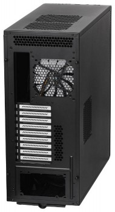
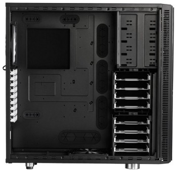
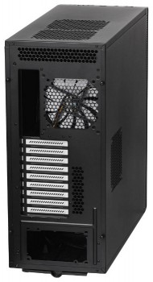
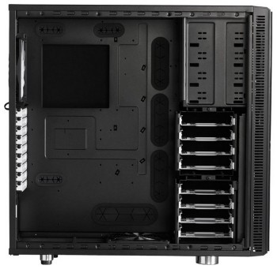

Корпус для ПК Fractal Design Define XL R2 черный XL-ATX Full-Tower
.jpg) 



Описание товара №1. Корпус для ПК Fractal Design Define XL R2 черный XL-ATX Full-Tower. Этот корпус относится к формату «фулл-тауэр» (полноразмерная башня), а значит, внутри него без проблем поместится много, очень много «железа».
Цена: 160$
Краткое описание товара. Корпус Fractal Design Define XL R2 – модель формата Full Tower строгого черного цвета. Корпус выполнен из миллиметровой стали, отличается минималистичным дизайном и внушительными габаритами. Главная отличительная черта Fractal Design Define XL R2– фронтальная панель с прокладкой шумоизоляции, которую можно открывать подобно дверце шкафа. Боковые панели также оборудованы шумоизолирующими прокладками. Все провода и кабели выводятся через специальные прорези, чтобы не мешать доступу к элементам компьютера. Система управления находится на верхней панели, где расположены порты USB 2.0 и 3.0, кнопки питания и перезагрузки, и два стандартных аудиогнезда. На верхней панели также расположены две вентиляционные решетки, куда можно установить пару дополнительных вентиляторов. Внутреннее пространство корпуса достаточно велико для свободного размещения блока питания, до четырех 5.25-миллиметровых устройств и до восьми жестких дисков.
Характеристики товара:
- Размещение HDD: поперечное;
- Размер тыловых вентиляторов: 140мм;
- Расположение БП: нижнее;
- Количество слотов расширения: 9;
- Вентиляторы на задней панели: 1;
- Вес корпуса: 16.4;
- Тип корпуса: Full-Tower;
- li Материал корпуса: сталь;
- Фронтальные аудио-разъемы: Да;
- Фронтальные разъемы USB 2.0: 2;
- Отсеки 3,5" внутренние: 8;
- Отсеки 5,25" внешние: 4;
- Форм-фактор материнской платы: XL-ATX;
- Толщина стенок корпуса: 1;
- Максимальная длина видеокарты: 470;
- Размеры корпуса: 232x564x570мм;
- Цвет: черный;
- Наличие блока питания: Отсутствует;
- Гарантия (мес): 24;
- БрендFRACTAL DESIGN;
- Фронтальные разъемы USB 3.02;
- Вентиляторы на передней панели: 1;
- Размер фронтальных вентиляторов: 140мм;
- Число доп. вентиляторов 140мм: 3;
- Блок управления вентиляторами: Да;
- Фронтальная откидная панель ("дверь"): Да;
- Размер нижних вентиляторов: 140мм;
- Вентиляторы на нижней панели: 1.
Обзор корпуса Fractal Design Define XL R2 на сайте www.overclockers.ua
Дополнительная информация для покупателей
Перед покупкой настоятельно рекомендуем задуматься над способом доставки, поскольку тянуть в руках эту коробку будет очень тяжело, несмотря на наличие боковых ручек. Вместе с упаковкой Define XL R2 весит целых 19 кг.Внимание!Товар подлежит обмену и возврату, только при наличии чека!
«Все права защищены».